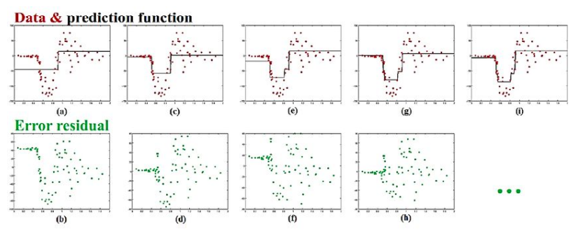
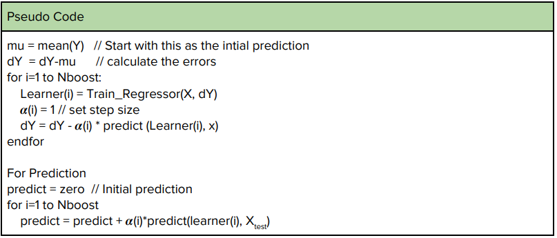
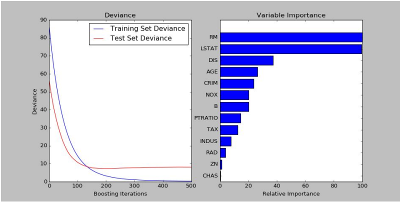
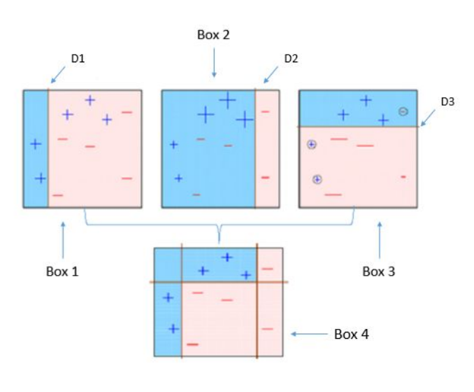
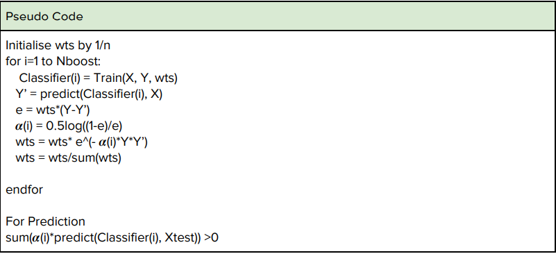
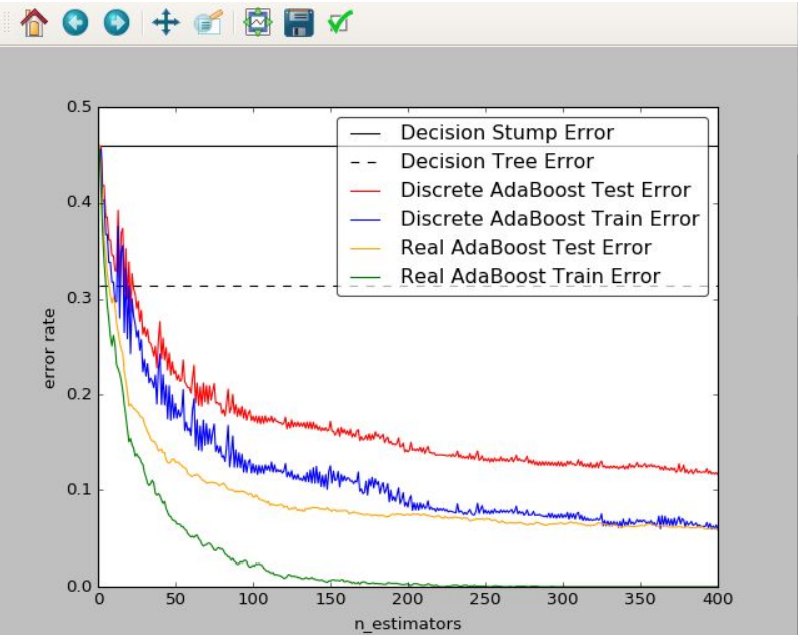

Ensemble Learning
Ensemble in layman terms refers to a group of things/people working towards one particular job, whether it be an ensemble of actors, singers, dancers etc in a theatrical production or an ensemble of learners predicting on the same dataset. The power of ensemble can be best realized in the real world through the example of Kaun Banega Crorepati, the popular Sony TV show(I hope it still comes on the same TV channel :P ). There usually a contestant has lifelines like the phone a friend, audience poll and 50:50. 50:50 is an option which gives you a probability of 0.5 of winning, and phone a friend also has a similar success but audience poll has a very high success rate and we hardly see the audience getting an answer perhaps once in a blue moon. Now consider each individual as a learner, each of them is a weak learner in itself with its own capabilities but when we pool the entire knowledge together we get a much higher probability of knowing the answer and hence getting the answer correct. Ensemble learning also addresses learning in the same fashion, and hence creates many learners on the same dataset and the final outcome is then a weighted average or some other suitable combination of all of them combined.
Having said this there are mainly two popular techniques of ensemble learning:
- Bagging
- Boosting
Bagging
Bagging stands for Bootstrap Aggregating. Bootstrapping refers to the technique of creating a random subset and aggregating means combining them. In this technique, one usually creates a number of training datasets from the same dataset by selecting data points randomly with replacement and then training the learner on that subset of training data. Many such subsets are made and learners are trained independently on each of the subsets. Now in case of regression problems the final outcome is taken to be the average of all the learners while in classification problems a majority vote is taken. Recall that a similar technique is used to reduce overfitting in normal regression 1 problems where we create validation datasets and check if we have overfitted or not. In a regression to ensure that we do not overfit we create a number of subsets and after each training run the learned model on the remaining datasets to see if the error is not high. While this ensures that we do not overfit the model here this is used to make a stronger model
An important point to note here that each learner should have the same model of the cost function else its purpose will fail. As usual, the cost function in most cases is taken to be the mean squared error
Bagging helps in reducing the complexity of the model, as the number of data points decreases in most cases if not all, the models which are fitted are also simple in nature and are not very complex functions.
Bagging works on the principle of bias-variance :

Thus the model is chosen such that both bias and variance and within an acceptable limit hence we are away from both underfitting and overfitting the model.

Problems and limitations:
- With a lot of data usually, the same classifier is learned hence it does not help.
- Does not work on linear models because with linear models it usually either creates the same linear model or creates discontinuous functions which many a time cannot be combined.
To remove this problem what is done is that an extra variance term is added to each learner. This is done by adding restrictions to individual learners such as allowing only a subset of features to take decisions in a particular learner. This enforces diversity and reduces overall bias.
Boosting
So having covered bagging we now come to boosting. Even boosting is based on the concept of combining various weak classifiers to obtain a strong model, it differs from bagging in the sense that in bagging each classifier or regressor is independent of each other while here there is sequential learning hence each classifier is trained such that it performs better on the training examples on which it did poorly in the previous instance. This means that once we learn or train a dataset, the training on the next dataset tries to learn from the errors which it made on the previous dataset.

So as we see here that we first fit a weak model on the first training set and then plot the residuals below. The model is then trained on the residuals and the model obtained is added with the previous model iteratively before finally after 4 iterations we get a good enough model for our predictions.
Boosting are of two types:
- Gradient Boosting- Boosting applied on regression problems
- Adaptive Boosting - Boosting applied on classification problems
Gradient Boosting
Gradient Boosting is boosting applied on regression problems. Here a sequence of regressors is trained such that it is able to predict better on the examples it earlier predicted incorrectly. Hence say Y’ is your set of predictions and Y is the actual dataset. Then Y’ is updated as Y’[i] = Y’[i] + 𝜶* f[i]
Where f[i] is the derivative of the cost function. The cost function is usually taken to be the mean squared error which is ∑(Y[i] - Y’[i])2 . Thus f[i] is taken as (Y[i] - Y’[i]). 𝜶 represents the step size of the step we take to reduce the errors.


Output of a Gradient Boosting Regressor implemented in python
Adaptive Boosting
Adaptive Boosting is a boosting technique used in classification problems. As earlier we first train a classifier and then for the next model we try to reduce the errors made by the earlier classifier. This is done by increasing the weights of the points it classified incorrectly. Hence we minimize the weighted error, in this case, the initial weights are all equal and as we run the boosting the weights are increased or decreased according to whether they are classified incorrectly or correctly.

Note that after each classification the wrong entries’ weights have been increased and the model is learned to reduce the error on the weighted error.
The weights are given by this formula:
The initial weights are initialised by 1/n where n is the number of points.


This is a python based implementation of Adaptive Boosting, Discrete Adaptive Boosting treats each weak classifier as equally strong while Real Adaptive boosting assigns a probability to each classifier.